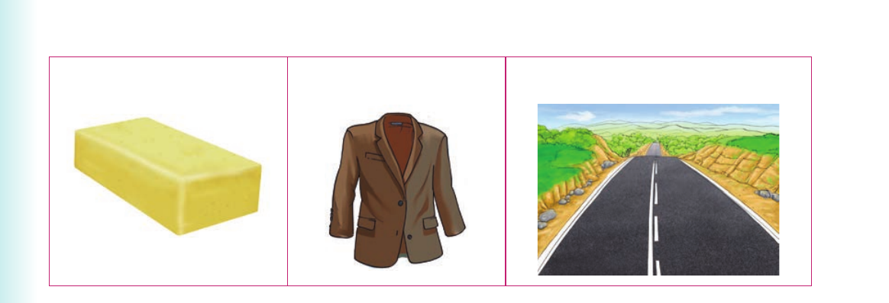

Long vowel sounds - Activities 4 and 5
Activity 4

1. Name the following pictures orally or using sign language: (a) (b) (c)
2. Pronounce or sign the following words:
| road | toad | boat | load | home | coat | comb |
| foam | dome | hoe | toe | soap | snow |
3. Pronounce the vowel in each word in (2). Or finger spell the vowel letters in each word in (2). 4. Read aloud or sign the following sentences: (a) A toad croaks. (b) Boats do not travel on roads. (c) I have a comb at home.
(d) A boat carries heavy loads.
(e) Hoes and combs are tools.
(f) I saw snow on the peak of Mount Kilimanjaro.
Activity 5
1. Pronounce or sign the following words:
| like | mike | bike | write | tight |
| light | kite | mine | time | line |